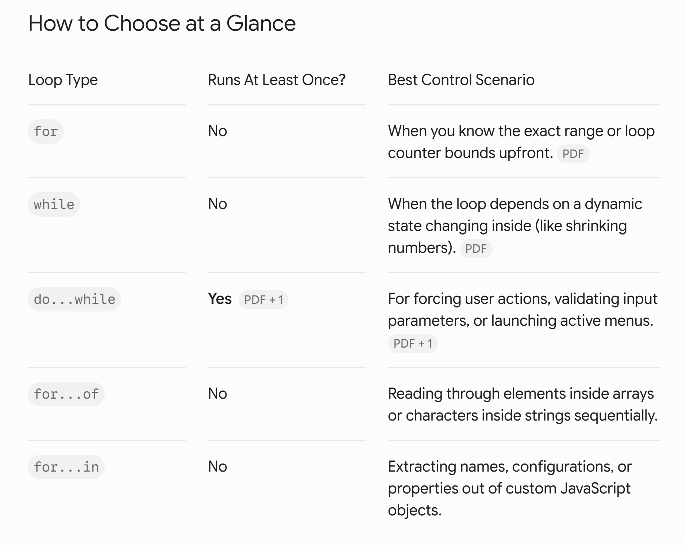

Not every problem is solved with %, /, and
Math.trunc() — those are specifically for
Digit Manipulation. Other problem types need entirely
different tools. This guide covers how to choose the right loop, plus
the core mechanics for arrays and strings.
You can technically force almost any loop to solve any problem, but picking the right one keeps your code readable and interview-standard.
Do you know the exact range or
number of iterations upfront?
/ \
Yes No
/ \
Use a FOR loop. Is it an Array or Object?
(e.g. 1 to 100, / \
array indexes) Yes No
/ \
Use for...of Does it need to run
or for...in. at least once?
/ \
Yes No
/ \
Use DO...WHILE loop. Use WHILE loop.
(e.g. Menus/Inputs) (e.g. Shrinking a number)
for Loop — "Known Range" SpecialistUse when you know exactly when the loop starts, stops, and how much it steps by before it even begins.
Best for: counting 1 to n, looping through an array index 0 to length−1, generating a grid.
Mental trigger: "I need to run this exactly X times."
The Standard for Loop Syntax
The standard for loop condenses initialization, condition
checking, and state updating all onto a single line. This is your
go-to structural layout when working with clean sequential numerical
ranges or matching against exact array boundaries.
for (initialization; condition; update) {
// Code block to be executed
}
Complete Code Blueprint:
for (let i = 1; i <= 5; i++) {
console.log(i); // Loops exactly 5 times
}
while Loop — "Unknown State" SpecialistUse when you have no idea how many times the loop will run, and you only care about a condition changing dynamically.
Best for: digit manipulation (while (n > 0)), structural game loops (while (gameIsRunning)).
The while Loop Syntax
The while loop checks the condition before executing the
code block. If the condition starts as false, the code block will
never run even once.
while (condition) {
// Code block to be executed
// Crucial: You must update variables here to eventually make the condition false!
}
Complete Code Blueprint:
let count = 1; // 1. Initialization
while (count <= 5) { // 2. Condition Check
console.log(count); // 3. Code Execution
count++; // 4. State Update (Crucial to avoid infinite loops)
}
do...while Loop — "Action First" SpecialistUse when the code must execute at least once before checking whether it should repeat.
Best for: input validation (ask for a password once, then check it), command-line menus.
Mental trigger: "Do this first, then check if we need to repeat."
The do...while Loop Syntax
The do...while loop executes the code block first, and
then checks the condition. This guarantees that the loop runs at least
once, regardless of whether the condition is true or false.
do {
// Code block to be executed at least once
// Variable update
} while (condition); // Note the semicolon at the end!
Complete Code Blueprint:
let count = 6;
do {
console.log(count); // Prints 6, even though 6 is not <= 5
count++;
} while (count <= 5);
When handling linear arrays, strings, or object structures in JavaScript, standard indices can sometimes become overly repetitive. JavaScript features specialized loop variations designed specifically to handle collection objects.
A. The for...of Loop (For Array & String
Values)
This loop extracts the actual element value directly from each position of an iterable object (like an array or a string), completely ignoring index numbers.
for (const element of iterable) {
// Code block using element value directly
}
Code Blueprint:
const items = ["Apple", "Banana", "Cherry"];
for (const fruit of items) {
console.log(fruit); // Prints: "Apple", "Banana", "Cherry"
}
B. The for...in Loop (For Object
Properties/Keys)
This loop iterates over the enumerable properties or keys of an object, or the structural index positions of an array.
for (const key in object) {
// Code block using object[key]
}
Code Blueprint:
const developer = { name: "Muneeba", role: "Frontend UI" };
for (const key in developer) {
console.log(`${key}: ${developer[key]}`);
// Prints:
// name: Muneeba
// role: Frontend UI
}

Since % and Math.trunc() are for digits,
arrays and strings need a different toolset:
pointers and tracking indices.
Step through memory positions (indices) using a for loop
counter.
array[i] gives the exact value at that
position.
Trace — Finding max value in [3, 7, 2]:
Initialize: let max = array[0] // assume 3 is the largest Start loop at index 1: for (let i = 1; i < array.length; i++) Iteration 1 (i=1): is array[1]=7 > max=3? Yes → max = 7 Iteration 2 (i=2): is array[2]=2 > max=7? No → unchanged Loop ends. Answer: 7
A major interview pattern for reversing arrays/strings or finding pairs. Two variables move toward each other instead of one counter.
let left = 0; and
let right = array.length - 1; — loop type:
while (left < right)
Trace — Reversing [A, B, C, D]:
Initial: [ A, B, C, D ]
^ ^
left right
Step 1: Swap left & right → [ D, B, C, A ]
Move pointers closer: left++, right--
Step 2: [ D, B, C, A ]
^ ^
left right
Swap → [ D, C, B, A ]
Move pointers closer: left++, right--
Step 3: left is no longer < right. Loop breaks!
Yes — if you treat them as foundational archetypes. They represent every primary structural execution model used in technical interviews.
Before writing any code for questions 1–50, classify each one first using this mental filter:
for loop.
while (n > 0) with % 10 and
Math.trunc().
for loop
checking array[i], or two-pointer
while (left < right).
i for rows, j for columns).
Map your strategy this way and you won't need to rely on memorization when prepping for roles down the line.